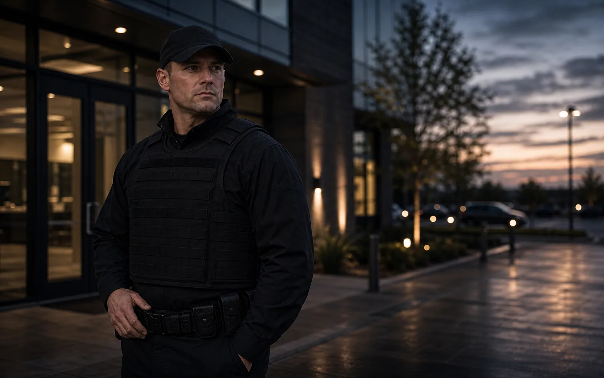
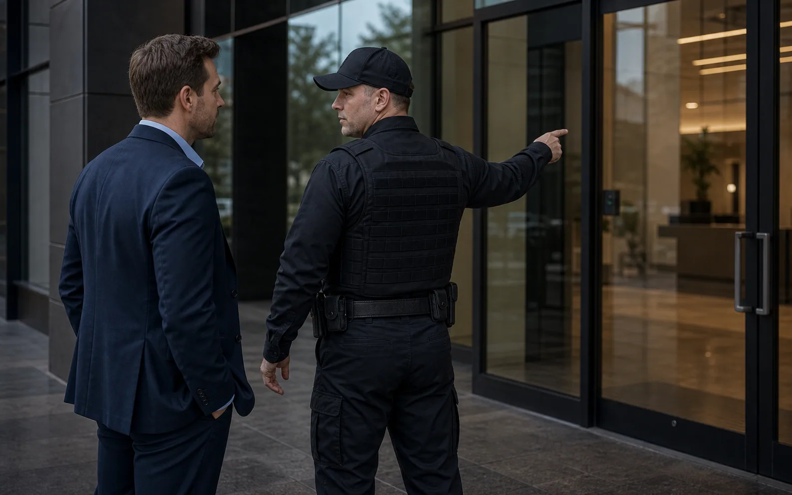
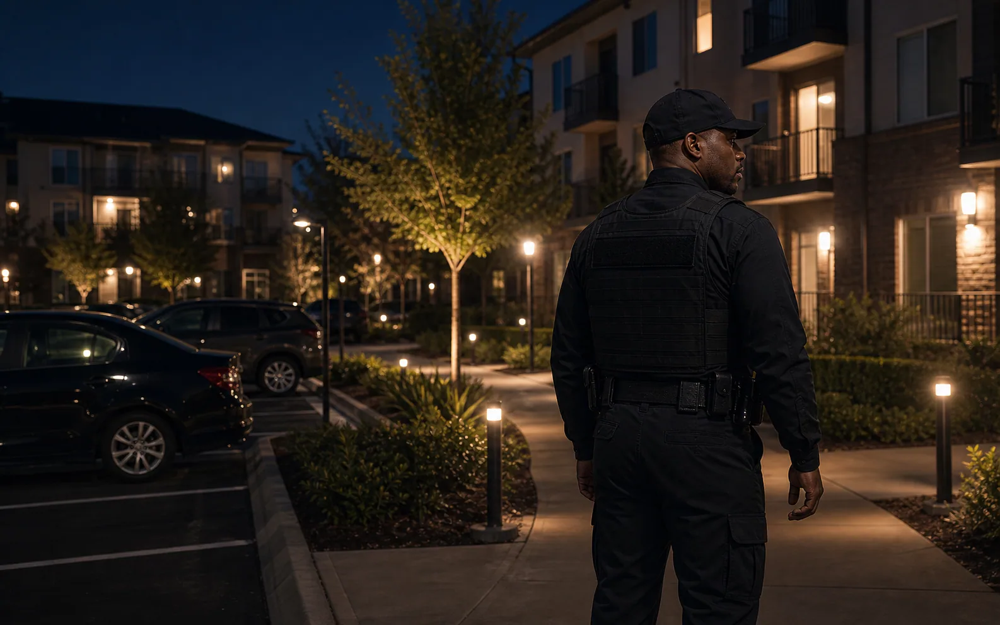

Clear first call
A focused call should identify location, urgency, property type, and whether the request needs guards, patrols, fire watch, events, or consulting.

Call, email, or send site details when you are ready to talk through coverage.
Highline keeps the trust factor practical: veteran-owned leadership, law-enforcement experience, real communication, and security work that can be documented after the shift.
A focused call should identify location, urgency, property type, and whether the request needs guards, patrols, fire watch, events, or consulting.
Highline brings military, law-enforcement, and security experience into the first conversation instead of treating the request like a generic intake.
Phone, email, and the quote form give buyers a practical way to match urgency with the right amount of detail.


Highline keeps the first conversation straightforward: call for urgent timing, email supporting details, or use the quote form when a property, route, event, or fire watch assignment needs a defined scope.
For urgent or time-sensitive coverage, calling is usually the fastest path. For planned guard coverage, apartment patrols, fire watch, event support, or consulting, the quote form helps organize the information Highline will need to respond intelligently.
Useful details include the property address or service area, type of property, requested hours, known concerns, preferred uniform tone, reporting expectations, and whether the need is one-time, temporary, or ongoing.
Clients can also use contact to ask about license information, insurance documents, service-area fit, portal visibility, or whether a specific security request should start with guards, patrols, fire watch, event support, or consulting. For the best first response, keep the message focused on what is happening at the site and what outcome management needs.
Some visitors need a quick call. Others need to send enough detail for a serious quote conversation.
Use the phone number for time-sensitive coverage, urgent site concerns, or when you need to understand whether Highline can respond within a specific window.
Email is helpful for attachments, license questions, application questions, certificates, site documents, or follow-up details that do not need an immediate answer.
Send a quote request when the need involves a property, event, patrol route, fire watch, apartment community, or ongoing coverage plan that needs scope.
If you are unsure which service fits, review the option closest to your concern, then send the details Highline needs to recommend a practical starting point.
Share the property type, service area, schedule, access instructions, and reporting expectations so Highline can respond with a realistic next step instead of a generic reply.
Call for security coverage, patrols, fire watch, event security, or urgent site needs.
Email details, quote requests, applications, or service questions.
Send property type, service area, timing, and coverage details for a more useful first response.